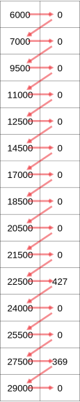

Two-dimensions, reshaping#
import numpy as np
import pandas as pd
import nipraxis
Let us return to the problem of the onsets and reaction times.
Again, we get the interstimulus intervals and response times for each trial in an experimental run:
# Fetch the file.
stim_fname = nipraxis.fetch_file('24719.f3_beh_CHYM.csv')
data = pd.read_csv(stim_fname)
n_trials = len(data)
trial_isis = np.array(data['trial_ISI'])
response_times = np.array(data['response_time'])
Again we calculate the onset times of each trial relative to the start of the scanning run.
exp_onsets = np.cumsum(trial_isis)
scanner_onsets = exp_onsets + 4000
scanner_onsets[:15]
array([ 6000, 7000, 9500, 11000, 12500, 14500, 17000, 18500, 20500,
21500, 22500, 24000, 25500, 27500, 29000])
2D arrays#
So far we have only used one-dimensional arrays.
For example, scanner_onsets is a one-dimensional array. We can see this from
the array shape:
scanner_onsets.shape
(320,)
This tells us the array has one dimension, and that dimension has length 320.
Notice that the shape is a tuple. A tuple a type of sequence, like a list. See the link for details. In this case, of a 1D array, the shape is a single element tuple.
We can also have arrays with more than one dimension. For example, we can make
a two-dimensional array of all zeros by passing the two-dimensional shape to
the np.zeros function, like this:
# Make a two-dimensional array with 320 rows, 2 columns.
two_dimensions = np.zeros((320, 2))
# Notice the shape
two_dimensions.shape
(320, 2)
This array has two dimensions, also called axes, so the shape is a two-element tuple.
We call the first dimension (axis) the rows and the second dimension the columns. The rows are the first axis (axis position 0). The columns are the second axis (axis position 1).
We can also make two-dimensional arrays by stacking arrays together.
For example, we can stack the scanner_onsets and the response_times into a
two-dimensional array, with two columns, like this:
# Specify sequence of arrays to stack.
arrays_to_stack = [scanner_onsets, response_times]
# Stack the arrays into two columns (axis=1)
all_times = np.stack(arrays_to_stack, axis=1)
all_times.shape
(320, 2)
To make things simpler to see in the examples below, we will use two-dimensional indexing to restrict ourselves to the first 15 rows of the array:
first_15_rows = all_times[:15, :]
Notice the indexing above. There are two parts of the indexing, separated by a comma. The first part is a slice for the rows (axis=0). The second is an slice for the columns (axis=1).
The row slice :15 asks for the first 15 rows. The column slice : asks for
all the columns.
Reshaping#
We often want to change the shape of arrays.
Our array above has 15 * 2 = 30 elements. Numpy can change make any shape array from these 30 elements, as long as the shape corresponds to 30 elements.
For example, one common move is to take a 2D array and flatten it out into a 1D array. The corresponding 1D array would have one axis of length 30.
We could write the new shape as a single element tuple, like this:
new_shape = (30,)
We pass the new shape to the np.reshape function, along with the array:
flattened = np.reshape(first_15_rows, new_shape)
flattened.shape
(30,)
# show the values.
flattened
array([ 6000, 0, 7000, 0, 9500, 0, 11000, 0, 12500,
0, 14500, 0, 17000, 0, 18500, 0, 20500, 0,
21500, 0, 22500, 427, 24000, 0, 25500, 0, 27500,
369, 29000, 0])
Notice the way that Numpy filled out the 1D array from the 2D array. It
fetches the elements by going across the columns first, and then the rows.
Call the original 2D thing a:
a = first_15_rows
Then the first eight values of the 1D reshaped version comes from:
[a[0,0], a[0,1],
a[1,0], a[1,1],
a[2,0], a[2,1],
a[3,0], a[3,1]]
[6000, 0, 7000, 0, 9500, 0, 11000, 0]
The image below shows the order in which np.reshape fetches the elements from the array:

We can reverse the process, by taking the flattened array, and putting it back into its original two dimensions:
unflattened = np.reshape(flattened, (15, 2))
unflattened.shape
(15, 2)
unflattened
array([[ 6000, 0],
[ 7000, 0],
[ 9500, 0],
[11000, 0],
[12500, 0],
[14500, 0],
[17000, 0],
[18500, 0],
[20500, 0],
[21500, 0],
[22500, 427],
[24000, 0],
[25500, 0],
[27500, 369],
[29000, 0]])
Notice that the 1D to 2D reshaping above exactly reversed the original 2D to 1D reshaping. Numpy fills the columns first, and then the rows.
Call the flattened (1D) version of the array f:
f = flattened
So, the first four columns of the new array are given by:
print('Row 0', [f[0], f[1]])
print('Row 1', [f[2], f[3]])
print('Row 2', [f[4], f[5]])
print('Row 3', [f[6], f[7]])
Row 0 [6000, 0]
Row 1 [7000, 0]
Row 2 [9500, 0]
Row 3 [11000, 0]
Here is another example of reshaping with an array of strings instead of numbers:
# another 1D array, using single-character strings.
arr_1d_strs = np.array(['a', 'b', 'c', 'd', 'e', 'f', 'g', 'h'])
arr_1d_strs
array(['a', 'b', 'c', 'd', 'e', 'f', 'g', 'h'], dtype='<U1')
# Reshaping to a three by three 2D array.
# Notice that numpy fills across the columns of the new array, then rows.
new_shape = (2, 4) # New shape, as a tuple.
arr_2d_strs = np.reshape(arr_1d_strs, new_shape)
arr_2d_strs
array([['a', 'b', 'c', 'd'],
['e', 'f', 'g', 'h']], dtype='<U1')
Back to 1D:
np.reshape(arr_2d_strs, (8,))
array(['a', 'b', 'c', 'd', 'e', 'f', 'g', 'h'], dtype='<U1')
As before, NumPy fetches the data across the columns, then the rows, to fill out the elements of the 1D array.
Reshape and -1#
The value -1 is special for np.reshape. It means, “make a dimension the
size that will use the remaining unspecified elements”.
For example, we could ask for the same 1D to 2D reshape above as:
np.reshape(arr_1d_strs, (2, -1))
array([['a', 'b', 'c', 'd'],
['e', 'f', 'g', 'h']], dtype='<U1')
This works because, once we have specified 2 as the length of the first dimension, Numpy can work out that the second dimension must be length 4, in order to use all the elements.
From the same logic, we could also write:
np.reshape(arr_1d_strs, (-1, 4))
array([['a', 'b', 'c', 'd'],
['e', 'f', 'g', 'h']], dtype='<U1')
Following the same logic, you can use -1 on its own as a shape, to reshape to one dimension.
np.reshape(arr_2d_strs, (-1,))
array(['a', 'b', 'c', 'd', 'e', 'f', 'g', 'h'], dtype='<U1')
Ravel#
It is very common to reshape an array of any shape to a 1D array, so Numpy has a short-cut function to do that:
np.ravel(arr_2d_strs)
array(['a', 'b', 'c', 'd', 'e', 'f', 'g', 'h'], dtype='<U1')